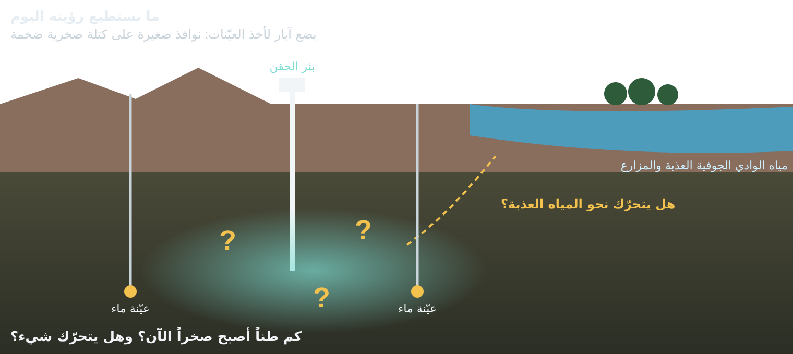

الفجيرة تحوّل ثاني أكسيد الكربون إلى صخر، ولا أحد يستطيع وزنه بعد.
وجدت الإمارات طريقة لحبس الكربون إلى الأبد. والجزء الصعب الآن هو إثبات ذلك، طنّاً بعد طن.
جبل يلتهم ثاني أكسيد الكربون
تتكوّن جبال الحجر الممتدة عبر الفجيرة في معظمها من صخر البيريدوتيت، وهو صخر قادم من أعماق الأرض دُفع إلى السطح. تتفاعل معادنه مع ثاني أكسيد الكربون والماء لتكوين كربونات صلبة، وهي العروق البيضاء نفسها التي تراها في صخور الساحل الشرقي.
تقوم الطبيعة بذلك ببطء. وفي عام 2023 بدأت شركة 44.01، مع أدنوك ومؤسسة الفجيرة للموارد الطبيعية ومصدر، بتسريع العملية: يُلتقط ثاني أكسيد الكربون، ويُذاب في ماء البحر، ثم يُضخّ عبر بئر إلى صخر البيريدوتيت. وفي التجربة الأولى تحوّلت 10 أطنان منه إلى صخر في أقل من 100 يوم.

من الهواء إلى الحجر في أربع خطوات
الالتقاط
يُؤخذ ثاني أكسيد الكربون من الهواء، أو من مدخنة مصنع إسمنت.
الإذابة
يُخلط ثاني أكسيد الكربون بماء البحر، فلا تُستخدم مياه عذبة.
الحقن
يُضخّ الماء المشبع بالغاز عبر بئر إلى صخر البيريدوتيت.
التمعدن
يتفاعل ثاني أكسيد الكربون مع الصخر ويصبح كربونات. وهذه هي الخطوة التي لا يراها أحد.
من 10 أطنان إلى الملايين
وفي الفجيرة أيضاً صناعة إسمنت كبيرة، وهي من أصعب الصناعات في خفض انبعاثاتها. وفي عام 2026 بدأت هولسيم الإمارات و44.01 تجربة لتمعدن ثاني أكسيد الكربون الملتقط من مصنع إسمنت في الفجيرة.
الإثبات هو العقبة
لا يُحتسب الطن المخزَّن من الكربون ضمن أهداف الإمارات للحياد المناخي، ولا يحصل على رصيد كربون، إلا إذا أمكن قياسه والإبلاغ عنه والتحقق منه. ولأن أرصدة الكربون لها قيمة مالية، يجب أن يكون الإثبات موثوقاً.
اليوم يُتحقق من التمعدن أساساً بأخذ عيّنات ماء من بضع آبار مراقبة، وباستخدام نماذج حاسوبية للصخر. وكل بئر نافذة صغيرة على كتلة صخرية ضخمة، وما بين الآبار لا يستطيع أحد أن يرى أين ذهب الكربون.
وهناك أيضاً سؤال السلامة: تعتمد مزارع الفجيرة على المياه الجوفية العذبة في الأودية. وإذا تحرّك السائل المحقون إلى مكان غير مخطط له، فمن المهم معرفة ذلك مبكراً.

مقارنة طرق التحقق من الكربون المخزَّن
| الطريقة | ترى كامل حجم الصخر؟ | مستمرة؟ | تقيس الكتلة مباشرة؟ | تكلفة التكرار |
|---|---|---|---|---|
| عيّنات ماء من الآبار | لا، نقاط منفردة | كل بضعة أسابيع | تُظهر الكيمياء لا الأطنان | متوسطة |
| المسوحات الزلزالية | نعم | لا، مسوحات متفرقة | لا | مرتفعة |
| النماذج الحاسوبية | نعم | نعم | لا، توقّعات فقط | منخفضة |
| مقاييس الجاذبية التقليدية | نعم | تنحرف قراءاتها مع الزمن | نعم | متوسطة |
| مقاييس جاذبية كيو-ميزان الكمّية | نعم | نعم، على مدار الساعة دون انحراف | نعم | منخفضة بعد التركيب |